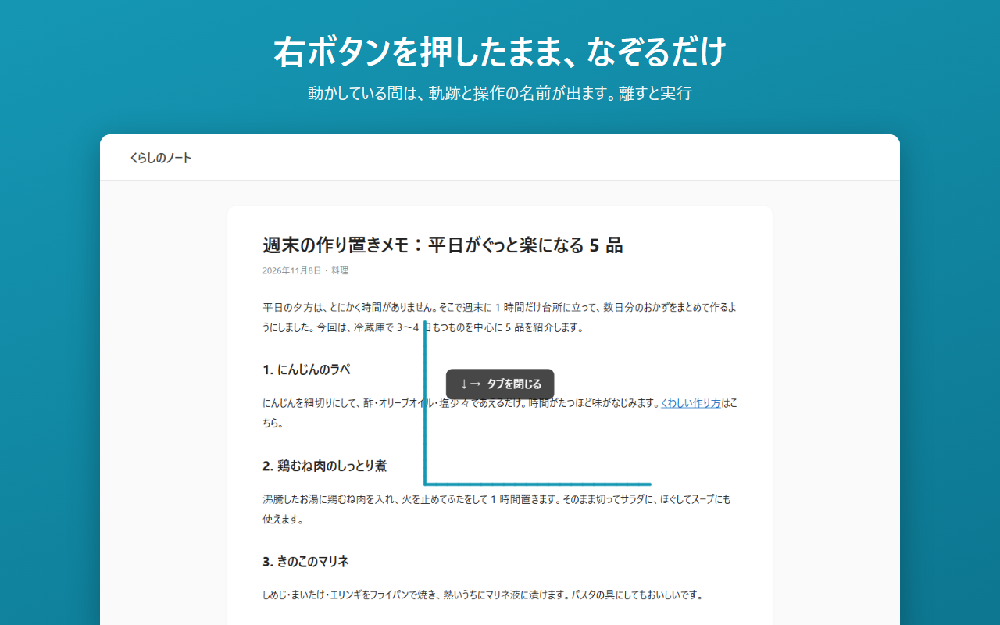
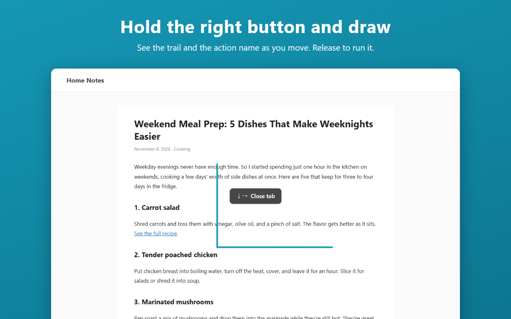

Flick Gesture
日本語 ・ English
マウスジェスチャーの拡張機能
右ボタンを押したままマウスを動かすだけで、「戻る」「タブを閉じる」などの操作ができる、Chrome と Edge の拡張機能です。設定も説明も、すべて自然な日本語で書きました。
Edge アドオンで入手 Chrome ウェブストアは審査中です

- マウスジェスチャー（最初から 10 の操作。形は自由に変えられます）
- ロッカージェスチャー・ホイールジェスチャー・スーパードラッグ
- サイトごとのオン・オフ
- 履歴や閲覧の内容を外部に送りません
Mouse gestures for Chrome and Edge
Go back, close tabs, and more just by holding the right mouse button and moving the mouse. Simple, lightweight, and easy to set up.
Get it from Microsoft Edge Add-ons Chrome Web Store: under review

- Mouse gestures (10 actions out of the box, fully customizable)
- Rocker gestures, wheel gestures, and super drag
- Turn gestures off on specific sites
- Never sends your history or browsing data anywhere